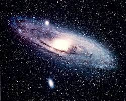
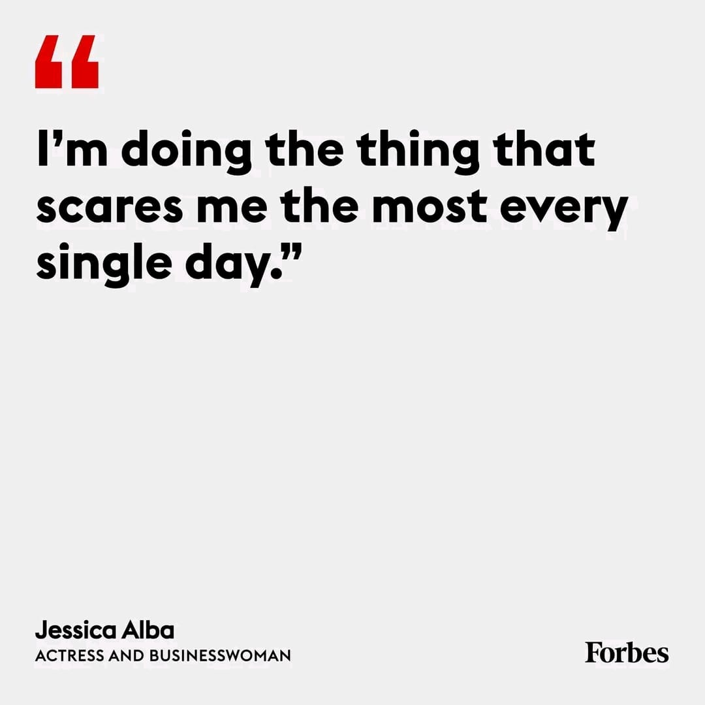

Stuff I love
Astrophysics is the study of celestial objects and phenomena in the universe, focusing on their physical properties, origins, and interactions. It explores topics such as stars, galaxies, black holes, exoplanets, and the fundamental forces shaping the cosmos.
Words that keep me going
Doing something that scares you daily involves intentionally stepping outside of your comfort zone to confront fears or uncertainties. It's about embracing discomfort as a pathway to personal growth, resilience, and expanding your limits. This practice encourages facing challenges head-on, fostering courage, adaptability, and a mindset that welcomes new experiences and opportunities for self-improvement.